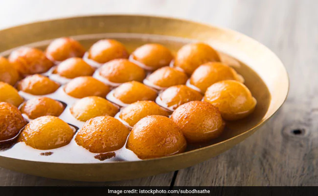

Homemade Bread Gulab Jamun Recipe

A traditional sweet, gulab jamun is one of the most loved sweet (mithai) in India. This homemade Gulab jamun is made from bread, malai and milk powder. It is not only delicious but also very easy-to-make. Try it out!
Ingredients
- 8 Bread Slices
- 2 tbsp Malai/cream
- 1/3 cup Milk
- 1 tbsp Maida
- 1 cup Ghee/Neutral oil
- 1 cup Sugar
- 2-4 Cardamom Pods
- 6-8 Strands Kesar (Optional)
- 1 tsp Rose water (Optional)
How to Make Homemade Bread Gulab Jamun
- Take bread slices and grind them to make fresh breadcrumbs.
- Add malai and milk powder to this and mash lightly.
- Now add milk in small batches and knead a soft dough.
- Make tiny dough balls out of this and keep aside on a plate.
- Heat ghee/neutral oil in a pan and fry the dough balls in batches.
- Lightly shallow fry until the balls are golden brown.
- While you are frying the dough balls, in another pan heat a cup of water.
- Add the sugar and stir until slightly thick, add crushed cardamom pods and Kesar strands.
- Let the sugar syrup come to a rolling boil then take off the heat.
- Now add the fried dough balls to the sugar syrup, serve hot or cold according to your preference.
Go to Homepage
Github Repo